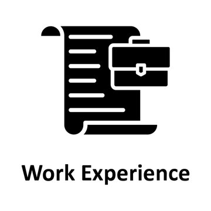
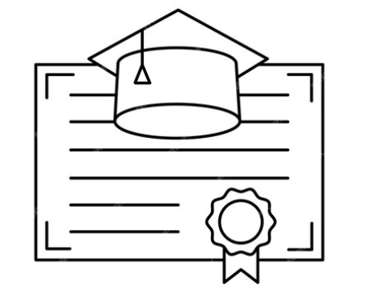

CV van Emre Duru

Samenvatting
Een ervaren people- en project manager
met veel management ervaring in
verschillende branches binnen de zakelijke
sector, waarvan de laatste 6 jaar in de
horeca branche.
Naast zeer tevreden &
succesvolle ondernemingen is mijn doel
om bedrijven gezond te laten groeien en
middels deze manier de resultaten
consequenter & met meer plezier te
behalen.
Ik combineer kwalitatieve analyses
in combinatie met een praktische &
resultaatgerichte mentaliteit.
Ik kan plannen
opstellen en uitvoeren. Teamwork,
integriteit en betrokkenheid zijn de
belangrijkste kernwaarden die niet mogen
ontbreken in combinatie met een gezonde
dosis humor.
Werkervaringen

AUGUSTUS 2023 - HEDEN
General Manager / Vegitalian
Utrecht
''Als visiegedreven General Manager heb ik de algehele leiding van alle
operationele processen binnen Vegitalian die bijdragen aan de totale groei,
kwaliteit, beleving en winstgevendheid van het concept.
Missie: ''het creëren van een systematisch werkcultuur methodiek die
efficiënt en schaalbaar is''.
Taken en verantwoordelijkheden
- Het behalen van de gestelde salestargets, KPI's en het bewaken van alle
kosten ten behoeve van het concept.
- Het bewaken en handhaven alle operationele werkprocessen.• Leiding geven aan het management team:
head-chef, productie manager, restaurantmanager & cateringmanager.
- Verantwoordelijk voor het algehele recruitment proces.
- Verantwoordelijk voor de training, ontwikkeling, aansturing, motivatie &
groei van de medewerkers met als doel:
een kweekvijver creëren van
gepassioneerde werknemers om een werkethos van passie &
gemeenschap te garanderen binnen het concept.
- Het introduceren, integreren & bewaken van verschillende
werksystemen binnen de organisatie.
- Verantwoordelijk voor de salesmanagement en CRM binnen de catering &
private hub.
- Leaden van (management)meetings.
- Optimaliseren van de werkprocessen: in kaart brengen van knelpunten en
deze operationeel werkbaar maken.
- Opstellen van forecasts en operationele implementatie van de financiële
doelstellingen: cost of labor & cost of sales.
- Opstellen van P&L's.
- Het uitvoeren van diverse administratieve werkzaamheden.
Opleidingen

- Stenden University / HBO Bachelor Business & Retail Management (2013-2017)
Diploma behaald: Ja
- NHL Stenden Creative Business / HBO AD Business Administration / Bedrijfskunde /
Bedrijfsmanagement (2013-2015)
Diploma behaald: Ja
- ROC van Amsterdam / MBO Niveau 4+ Ondernemer Detailhandel (2010-2013)
Diploma behaald: Ja
- Oostvaarderscollege / Hoger Algemeen Voortgezet Onderwijs | Management & Economie (2005-2010)
Diploma behaald: Ja
Vaardigheden
- Managementvaardigheden ⭐️⭐️⭐️⭐️⭐️
- Besluitvaardig ⭐️⭐️⭐️⭐️⭐️
- Automatiseringskennis⭐️⭐️⭐️⭐️⭐️
- HTML vaardigheden ⭐️⭐️⭐️
- Javascript vaardigheden ⭐️⭐️⭐️
- CSS vaardigheden ⭐️⭐️⭐️
Cursussen & trainingen

- Udemy Online Course / Web Development (2023-2024)
- LOI / Time Management (2021)
- McDonald's Nederland / Great Managers Running Great Businesses (2019-2020)
- Udemy Online Cursus / E-Commerce(2018)
- C&A interne cursus / Financieel & Commercieel Management (2016)
- MANDEV Benelux / Verandermanagement (2015-2016)
- OVD Ede / Managementvaardigheden (2013-2015)
Contactgegevens
Contactgegevens
Hobbies & interesses
Hobbies & interesses